This poster was presented at the 2026 "Observations and Theory of Classical Nova Transients" workshop in Sexten, Italy.
As of this writing, there are three configurations of runs with data.
| # | White Dwarf Mass (M☉) | Main Sequence Donor Mass (M☉) | Initial Orbital Period (hr) |
|---|---|---|---|
| 1 | 1.115 | 0.5 | 6 |
| 2 | 0.80 | 0.5 | 6 |
| 3 | 1.115 | 0.7d | 6 |
For each, I'll post a series of figures, but they'll mostly be expained for the first configuration only. First, we'll begin with the configuration featured in the poster.
Like all configurations, this one starts with the two stars in a 6-hour circular orbit. Magnetic braking brings the starts into contact within several million years, as shown in Figure 1.
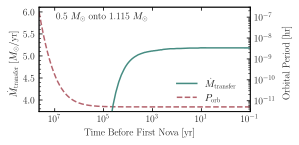
Once the mass transfer begins at a period of around 3.75 hr, it rises to a rate of around 4 × 10–9 M☉ yr⁻¹ before a first nova eruption. The nova and its aftermath are shown in Figure 2.
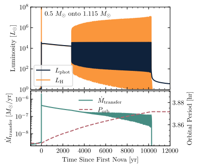
There's a lot going on in this figure. The initial spike in both luminosities (top panel) is the nova eruption. Coincident with this, the mass transfer rate spikes up because the companion star is irradiated strongly by the nova, though it comes down after the outer layers adjust to the new thermal structure.
After the nova, the photospheric and hydrogen fusion luminosities are nearly equal at a few times 104 L☉, the hallmark of a post-outburst supersoft source phase. However, the duration is a ludicrous 2750 years. For comparison, a model with no irradiation-driven mass transfer would last only a couple years. As you can see in the lower panel, the mass transfer rate has been elevated into the stable burning regime by the irradiation. This has created a self-sustaining persistent supersoft source: the irradiation from the supersoft source keeps the companion star bloated, which keeps the mass transfer rate high, which sustains the supersoft source.
However, since the mass transfer from a low-mass companion to a relatively high-mass white dwarf acts to inrease the mass ratio, the orbit expands in response to the mass transfer. Magnetic braking is no longer able to compete with this effect, and the widening binary will do two things to lower the mass transfer rate. First, the Roche lobe of the companion star will expand with the semimajor axis. Second, the irradiation will lose strength as the stars move apart, which will reduce the amount of bloating of the companion star. These two effects combine to eventually reduce the mass transfer rate below the stable burning threshold, and a period of recurrent novae begins at around 2750.
Irradiation is still relevant during the recurrent novae, and since the white dwarf continues to stay hot even as it is coming down from a nova, the mass transfer rate remains elevated for hundreds of recurrent novae, which appear as a blur of ink on this figure (but see Figure 3 for a zoomed-in view of the recurrent novae). After a period of around 7500 more years, the recurrent novae end abruptly, as the longer and longer recurrence times eventually allow the white dwarf to cool enough that the irradiation is no longer sufficient to keep the mass transfer rate in the recurrent nova regime. In face, the mass transfer rate effectively drops to zero, as the companion star has been driven further away than it was at the first nova eruption, so the binary detaches, entering a phase of hibernation.
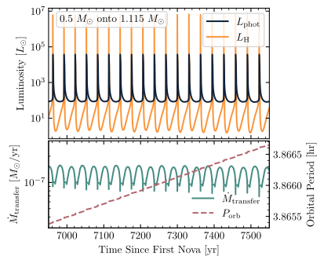
The period of hibernation lasts long, compared to the supersoft and recurrent nova phases, at around 150,000 years. At that point, the binary comes back into contact and resumes accretion, albeit at the non-irradiated rate in the range of a few times 10–9 M☉ yr⁻¹. The binary then goes through another nova eruption, and the cycle repeats. Figure 4 shows two full such cycles. Perhaps surprisingly, the orbital period shows a secular increase through multiple cycles. This process should repeat until a large enough helium layer builds up to trigger a helium nova, which may have more dramatic effects on the bianry given the much larger ejecta mass and energy release from a helium nova.
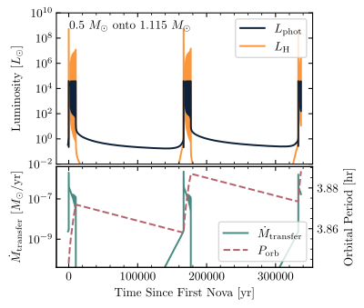
This configuration behaves similarly to Configuration 1, but with longer timescales since the white dwarf is less massive. Figures 5–8 show correspond to Figures 1–4 respectively.
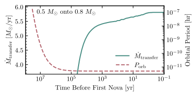
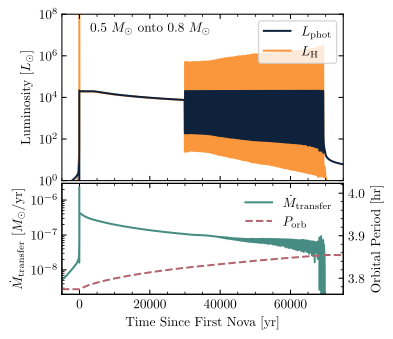
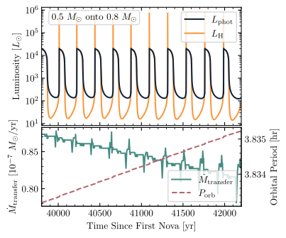
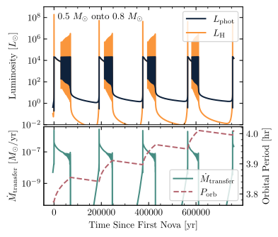
Interestingly, this configuration exhibits a slightly different behavior. It still has a sustained supersoft phase and recurrent novae, but with the larger donor mass, it
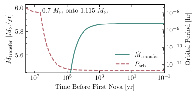
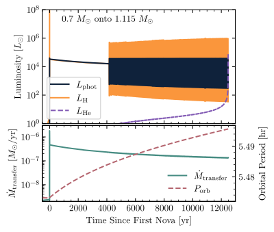
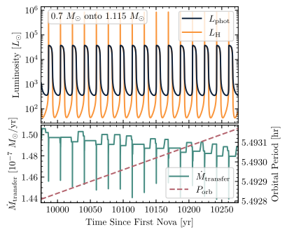
We do not have a multi-cycle figure for configuration 3 since we didn't try to evolve through the helium flash.